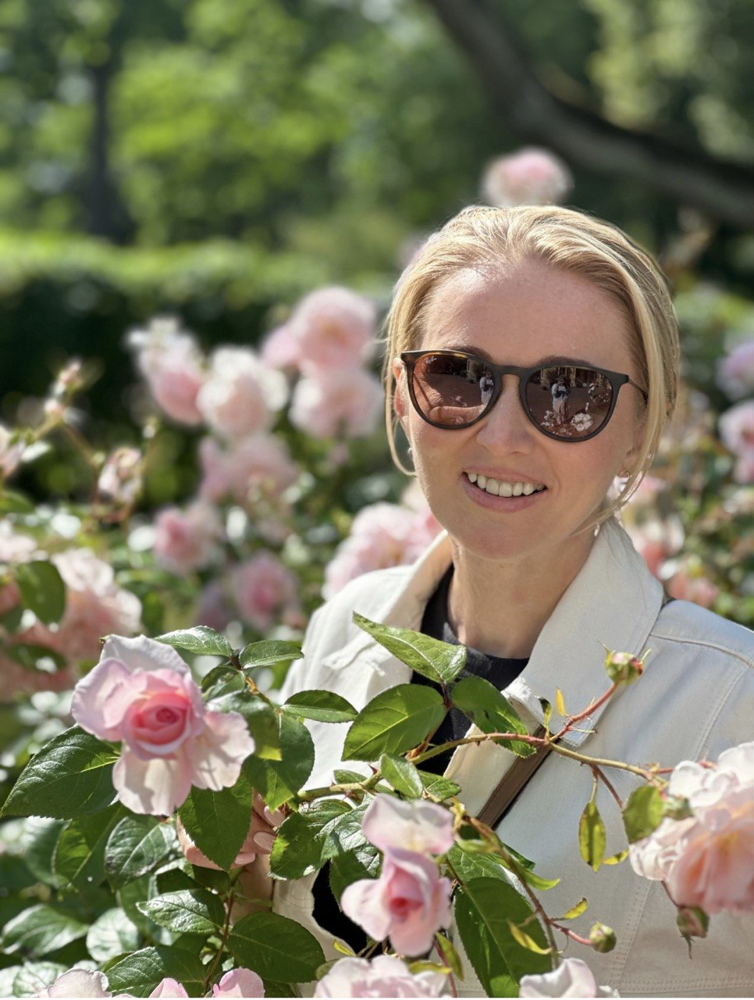
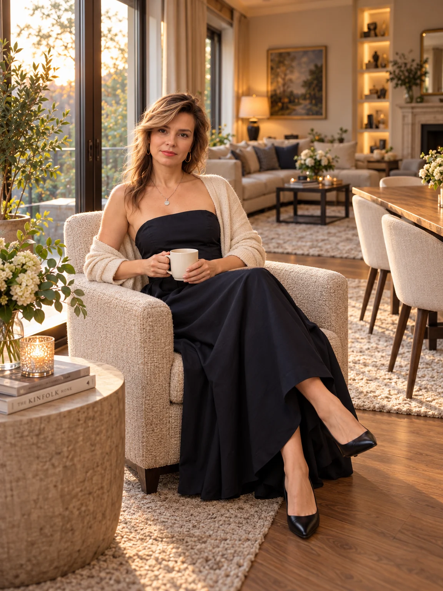
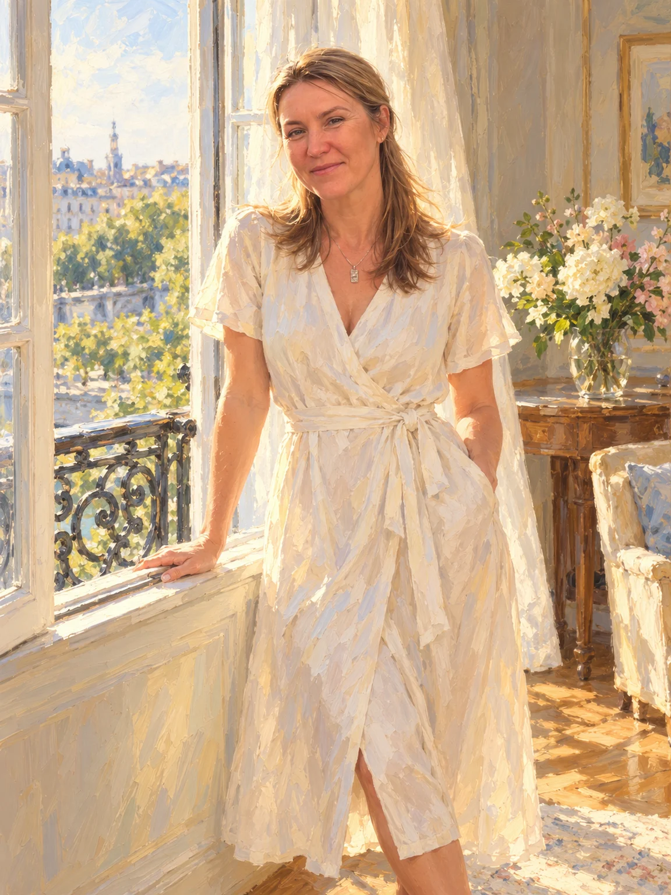
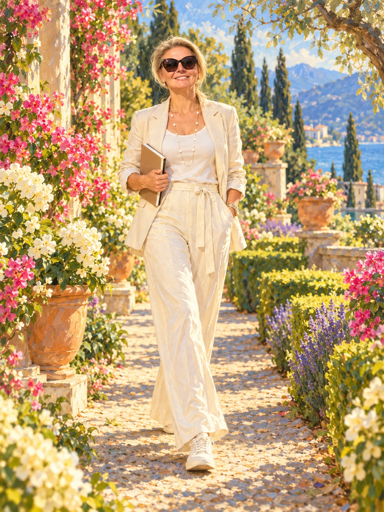
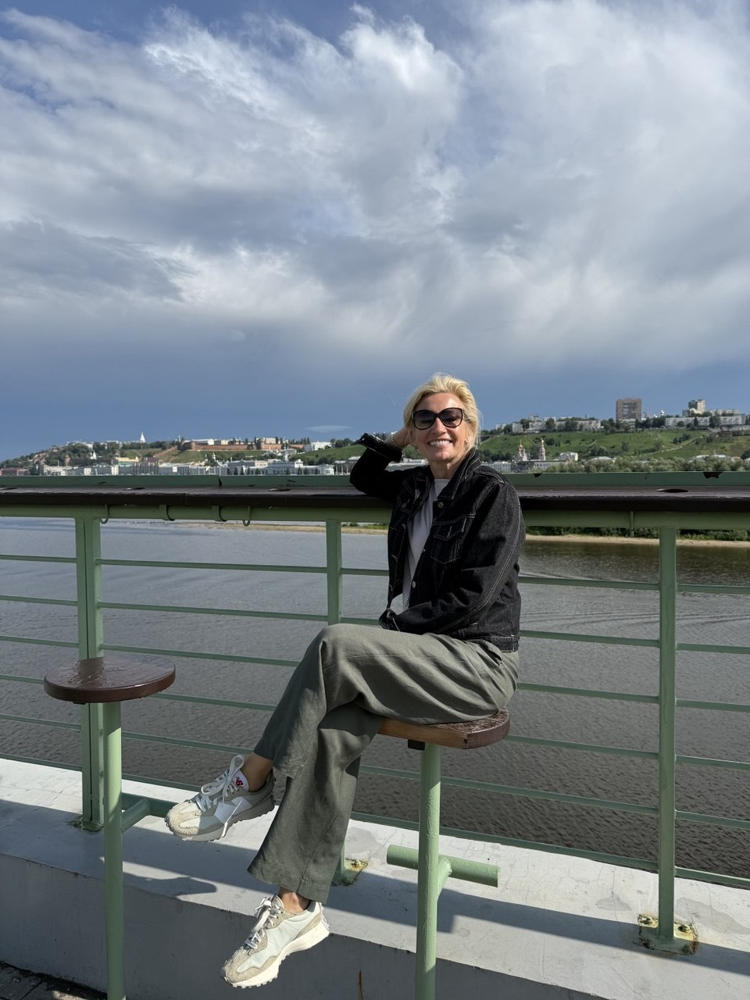

01 / НАШ КРУГ
Анюта
Опора и светС Анютой спокойно и ясно. В её матрице много порядка, честности и радости: она умеет объяснить просто, поддержать и не усложнять. На неё можно положиться.
Мы разные. И у каждой — своё место рядом.
Посмотрим на нашу дружбу через образы: с теплом, любопытством и без готовых ярлыков.

Анюта
Юля Максимова Юля Исаева
Юля Исаева Ирина Ростовцева
Ирина Ростовцева
Ирина Котикова
Мария
ОльгаКаждая роль — бережное прочтение символических образов. В них можно узнать что-то своё, улыбнуться совпадениям и увидеть подруг с новой стороны.
С Анютой спокойно и ясно. В её матрице много порядка, честности и радости: она умеет объяснить просто, поддержать и не усложнять. На неё можно положиться.
Юля придумывает и начинает. В её матрице соседствуют творчество и движение: идея у неё быстро превращается в дело и в красивый результат.
Юля Исаева собирает людей рядом. В её матрице особенно сильна тема близости и заботы: рядом с ней тепло, и от неё идёт ощущение «я не одна».
Ирина Ростовцева умеет быть надёжной и при этом идти вперёд. В её матрице порядок и честность соседствуют с лёгкостью и смелостью начинать новое.
Ирина Котикова чувствует момент и любит путь. Больше всего в её матрице образов движения и перемен. Рядом с этим стоит Отшельник: умение побыть в тишине и выбрать свой темп.
Мария находит слова для красоты и слышит себя. В её матрице есть умение воплощать замысел, интуиция и чувство призвания: её книга хорошо вписывается в этот набор образов.
Ольга ведёт за собой лёгкостью. Больше всего в её матрице перемен и открытости новому, рядом с ними опыт, который хочется передать, и вдохновение для других.
В нашем круге чаще всего встречаются образы движения и перемен — 15 из 42 точек. Рядом звучит тема опоры и порядка — 14 точек.
умение придумывать, творить и делать мир красивее.
умение прислушаться к себе, побыть в тишине, увидеть суть.
дорога, новое, смелость начинать и умение доверять переменам.
надёжность, ясность, спокойная сила и умение передавать опыт.
открытость, вдохновение, чувство, что всё складывается.
близость, забота и умение собирать людей рядом.
Это условная группировка символов, а не измерение качеств. Один образ может относиться к двум темам: сумма значений равна 45 при 42 точках. Числа помогают увидеть общие мотивы, а не сравнить подруг между собой.
| Имя | Созидание и красота | Интуиция и глубина | Движение и перемены | Опора и порядок | Свет и радость | Связь и любовь |
|---|---|---|---|---|---|---|
| Анюта | 0 | 0 | 1 | 4 | 2 | 0 |
| Юля Максимова | 2 | 0 | 3 | 1 | 0 | 1 |
| Юля Исаева | 1 | 1 | 0 | 1 | 0 | 3 |
| Ирина Ростовцева | 0 | 0 | 2 | 4 | 1 | 0 |
| Ирина Котикова | 0 | 1 | 4 | 1 | 0 | 0 |
| Мария | 1 | 1 | 2 | 1 | 0 | 0 |
| Ольга | 1 | 0 | 3 | 2 | 1 | 0 |
| Всего в круге | 5 | 3 | 15 | 14 | 4 | 4 |
Что созвучно, чем можно делиться, чему учиться друг у друга. Символические образы помогают заметить созвучия и начать разговор о дружбе.
Что общего. У вас обеих есть Иерофант (умение учить и делиться опытом) и Сила (мягкая внутренняя сила). Вы обе умеете объяснить просто и поддержать, не давя.
Что Анюта привносит в дружбу. Ясность и порядок. Справедливость и Император в её матрице про честность, надёжность и понятную структуру. На неё можно положиться, когда нужна ясность.
Чем делится Ольга. Лёгкость и смелость менять. Шут и Колесо Фортуны в матрице Ольги про доверие переменам и умение начинать новое без гарантий.
Что общего. В ваших матрицах образ Шута связан с темой жизненного пути: свободой, лёгкостью и умением начинать без гарантий. Общий образ Иерофанта напоминает о знаниях и передаче опыта. В этих образах можно увидеть вашу открытость новому и желание делиться.
Что Юля привносит в дружбу. Творческий размах. Маг и Императрица в её матрице про умение придумать и превратить идею в красоту.
Чем делится Ольга. Умение передавать опыт и вдохновлять других. Иерофант Ольги про то, чтобы делиться знанием, а Звезда про вдохновение.
Что общего. У вас обеих есть Иерофант (опыт и умение делиться) и Сила (спокойная поддержка). Вы умеете быть опорой, не давя на других.
Что Юля привносит в дружбу. Тепло и связь. Влюблённые встречаются в её матрице дважды: это про близость и умение собирать людей рядом. Императрица добавляет заботу и красоту.
Чем делится Ольга. Лёгкость и свободу. Шут и Колесо Фортуны Ольги напоминают, что двигаться можно легко и без лишнего груза.
Что общего. У вас обеих есть Сила (спокойная уверенность) и Шут (лёгкость и открытость новому). Вы умеете начинать новое, не теряя спокойствия.
Что Ирина привносит в дружбу. Надёжность вместе со смелостью. Император (порядок), Справедливость (честность) и Колесница (движение к цели): на Ирину можно положиться, и при этом она идёт вперёд.
Чем делится Ольга. Вдохновение и новые идеи. Звезда Ольги про надежду и вдохновение, Колесо Фортуны про открытость переменам.
Что общего. Колесо Фортуны стоит у вас в одной и той же точке, там, где живут таланты. Вы обе чувствуете момент и умеете довериться переменам.
Что Ирина привносит в дружбу. Тишину и устремление. Отшельник про глубину и умение побыть с собой, Колесница про движение к цели. Вместе это спокойный, уверенный путь.
Чем делится Ольга. Мягкую уверенность. Сила Ольги про спокойствие без давления: когда можно не спешить, но и не стоять на месте.
Что общего. Три общих образа. Иерофант: опыт и умение делиться. Колесо Фортуны: перемены. Шут: открытость новому. Вы обе любите узнавать новое и рассказывать другим о том, что узнали.
Что Мария привносит в дружбу. Слово и внутренний голос. Маг про умение воплощать замысел, Верховная Жрица про интуицию, Суд про призвание. Мария находит слова для того, что мы чувствуем.
Чем делится Ольга. Смелость идти в неизвестное. Шут Ольги про умение начинать, не дожидаясь, пока всё станет понятно.
Матрица судьбы — эзотерическая система интерпретации даты рождения, не научный метод. Здесь мы используем её как язык образов для личного разговора. Аркан — один из 22 символов; ниже — 18 образов, упомянутых на этой странице. Точка — место в схеме, связанное с определённой темой: например, талантами или характером.
В этом круге можно быть собой.
И узнавать друг друга заново.
Пусть здесь будет место и общим воспоминаниям, и новым историям, которые мы ещё проживём вместе.